夏靖远
个人简介
一、 我是谁
我是一名扎根于人工智能与信号处理交叉领域的科研工作者，现任国防科技大学电子科学学院副教授（博导）。我于2020年在伦敦帝国理工学院取得博士学位，本硕皆师从国防科技大学电子科学学院黎湘院士。
二、 研究方向与学术追求：在理论与真实物理世界的交汇处“死磕”
我的研究根植于机器学习理论的底层逻辑（特别是统计学习与优化理论）。博士期间，我主攻传统非凸优化理论与神经网络模型的深度结合，建立了一套“学习辅助的灰箱优化”理论体系，致力于在完整保留问题模型的前提下，实现无监督、无预训练的逆问题求解。
如今，课题组的研究进一步聚焦与延伸，旨在解决智能体与多模态大模型（VLM）在垂直场景中的落地难题。我们的应用主战场包括：
• 底层视觉：复杂条件下的图像与视频增强、恢复；
• 时序信号分析：雷达信号、传感器数据等高维时间序列解析；
• 目标检测识别：复杂物理场景下的高鲁棒性目标感知。
在学术品味上，我们坚守“理论与工程并重”——既追求具备高度可解释性的理论创新，更注重解决真实物理世界中的复杂信号处理难题。因为我极度享受与学生共探前沿的快感，课题组的科研图景会始终紧贴最新技术浪潮，进行破局与应用创新。
三、 人才培养理念：授人以渔，重塑系统性科研思维
我极度排斥学术投机主义与精致利己主义，更享受“从零开始”培养真正热爱科研的学者。比起单纯的知识灌输，我更看重“授人以渔”。你的第一项科研工作，我会亲自给方案、推代码、逐字rewrite论文；但在中后期，我期待你能独立自主地向未知的科技深水区发起冲锋。
我将“严谨、踏实、讲逻辑、有条理、知辩证”具象化为课题组的方法论基石，并贯穿培养始终：
• 严谨：对数据和推导心存敬畏，绝不放过任何一个异常的实验结果；
• 踏实：摒弃浮躁，在代码的泥土与浩瀚的文献中夯实底层基础；
• 讲逻辑：构建清晰的科研叙事，知其然，更知其所以然；
• 有条理：在多线任务与海量实验中，保持拆解问题、有条不紊的工程管理能力；
• 知辩证：以辩证的科学方法论审视每一场失败与突破，打破思维定势。
我希望你在这里收获的不仅仅是几篇高水平Paper，更是系统性探索未知的底层能力，以及日积跬步、以致千里的成长满足感。
四、 个人性格与团队文化：锋芒与温情并存
关于我这个人：嘴碎、性急、嗓门大、好为人师；毒舌、强势、讲原则、爱请吃饭。
我自己读博时淋过雨，所以绝不会给你泼开水。但在科研标准上，我信奉“金杯共汝饮，学术不相饶”。生活里，我们可以一起开黑、旅游，见天地、见众生、见自己；但在学术上，我对质量与逻辑的把控绝对苛刻。
关于支撑条件：得益于团队承担的重大科研任务，我们拥有远超基础教学需求的充沛计算资源（高性能GPU集群）、一流的实验环境以及充足的学术交流经费，足以支撑你任何富有想象力的科研尝试。在任务安排上，个人科研课题与项目工作的时间配比严格控制在8:2，我们用完备的软硬件保障，坚定守护你的自由探索空间。
五、 写在最后
我不挑剔你的科研基础。只要你是踏实勤奋、自我驱动的坚守者，坚信“功不唐捐、玉汝于成”，我们就是同路人。
欢迎随时通过邮件与我联系，咨询任何你感兴趣的课题方向或团队招录细节。
团队风采
新闻动态
2026年9月： 论文 Misalignment-Robust Mask-Guided Visual Reconstruction via Probabilistic Luminance Modeling for Shadow Removal 被 TMM 接收！
2026年8月： 论文 Unlocking Optical Prior: Spectrum-Guided Knowledge Transfer for SAR Generalized Category Discovery 被 TCSVT 接收！
2026年7月： 论文 A Learning-aided Unsupervised Method for Sparse Aperture ISAR Imaging and Autofocusing 入选 ESI高被引论文！
2026年7月： 论文 Machines Serve Human: A Novel Variable Human-machine Collaborative Compression Framework 被 TIP 接收！
2026年6月： 论文 Efficient Image Dehazing via Prior-Guided Hierarchical Harmonization Network 被 TCSVT 接收！
2026年5月： 论文 Meta-learning based Domain Prior with Application to Optical-ISAR Image Translation 入选 ESI高被引论文！
2026年5月： 一篇论文被 ICML 录用！
2026年5月： 论文 Spectrally Spatially Coupled Dynamic Reduction for Efficient Hyperspectral Image Super Resolution 被 TGRS 接收！
2026年4月： 论文 Metalearning-Based Alternating Minimization Algorithm for Nonconvex Optimization 入选 ESI高被引论文！
2026年4月： 论文 Band-kernel Stochastic Learning for Unsupervised Blind Hyperspectral Image Super-Resolution 被 TPAMI 录用！
2026年2月： 论文 Scan Clusters, Not Pixels: A Cluster-Centric Paradigm for Efficient Ultra-high-definition Image Restoration 被 CVPR 2026 录用！
2026年1月： 祝贺杨志雄和孔得荣获批 湖南省自然科学基金青年学生基础研究项目！
2025年12月： 祝贺杨志雄获批 国家自然科学基金青年学生基础研究项目（博士研究生） ！
2025年12月： 论文 A prototype-based semi-supervised learning method for few-shot SAR target recognition 被 J-STARS 录用！
2025年11月： 论文 Ultra-High-Definition Image Restoration via High Frequency Enhanced Transformer 被 TCSVT 录用！
2025年11月： 论文 Dynamic Semantic Tokenization for Time Series via Elastic Sampling on Physics-aware Perception 被 AAAI 2026 录用！
2025年10月： 论文 A Learning-aided Unsupervised Method for Sparse Aperture ISAR Imaging and Autofocusing 被 TAES 录用！
2025年9月： 论文 Luminance-Aware Statistical Quantization: Unsupervised Hierarchical Learning for Illumination Enhancement 被 NeurIPS 2025 录用！
2025年6月： 一篇论文被 TIP 录用！
2025年5月： TPAMI 2024 论文 Blind Super-Resolution Via Meta-Learning and Markov Chain Monte Carlo Simulation 入选 ESI高被引论文 (Top 1%) 及 热点论文 (Top 0.1%)。
2025年4月： 两名本科生的工作被 GRSL 录用！
2025年3月： 一篇论文被 ICML 录用！
2024年12月： 论文 A Cross-Modal Multi-Attitude Framework for the Generation of Space Target ISAR Images 被 ICASSP 录用！
2024年5月： 论文 Blind Super-Resolution Via Meta-Learning and Markov Chain Monte Carlo Simulation 被 TPAMI 录用！
2024年3月： 论文 A Dynamic Kernel Prior Model for Unsupervised Blind Image Super-Resolution 被 CVPR 录用！
2023年9月： 论文 Meta-Learning Based Domain Prior with Application to Optical-ISAR Image Translation 被 TCSVT 录用！
2023年9月： 论文 Meta-Learning Based Alternating Minimization Algorithm for Nonconvex Optimization 被 TNNLS 录用！
成果发表
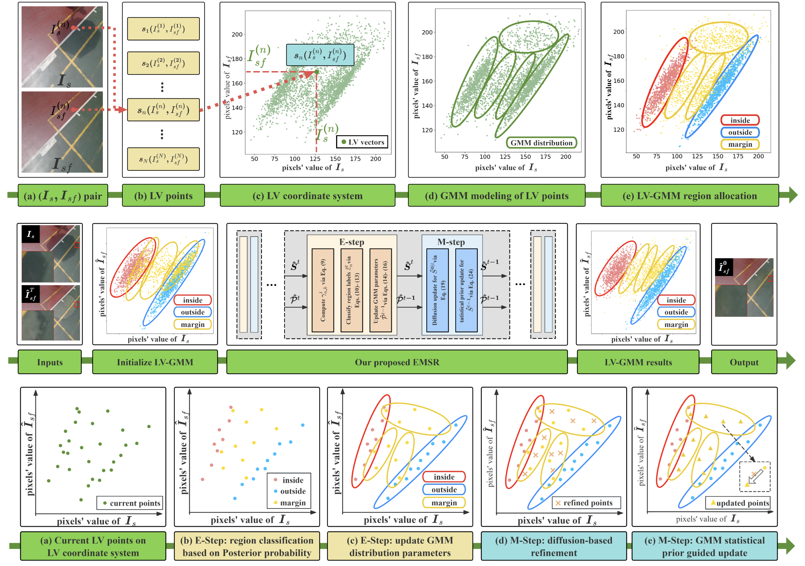
IEEE Transactions on Multimedia, 2026
EMSR is a plug-and-play test-time refinement framework that reduces shadow-boundary artifacts caused by mask misalignment. By jointly representing pixel luminance before and after restoration, it turns uncertain boundary assignment into probabilistic inference. An EM-inspired process alternates Gaussian mixture-based region estimation with luminance refinement guided by a frozen diffusion prior, allowing restoration feedback to progressively correct misallocated pixels. EMSR consistently improves shadow-margin reconstruction across supervised and unsupervised backbones without additional task-specific training or paired shadow-removal data.
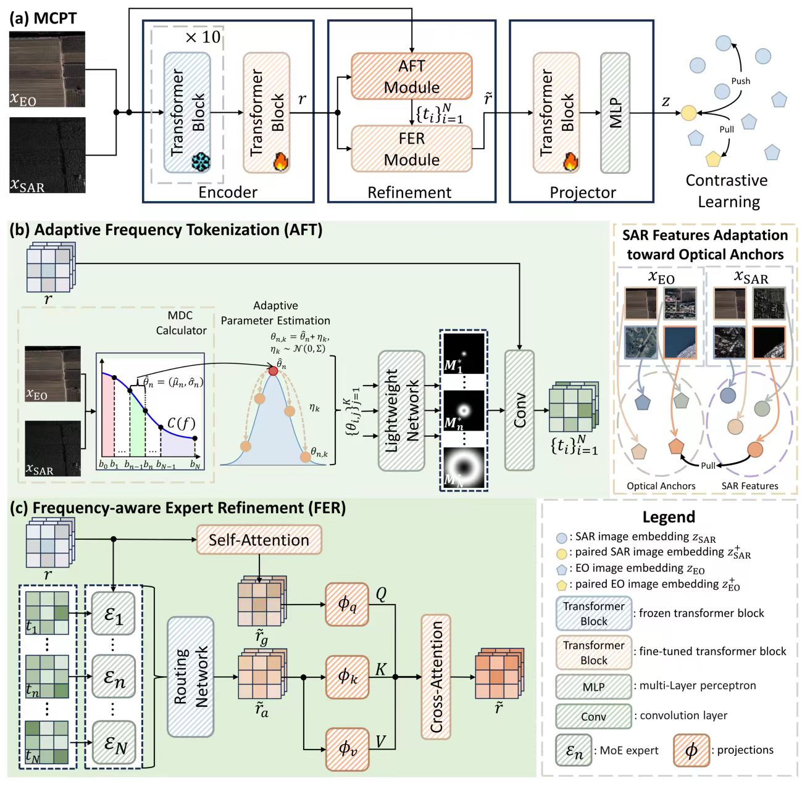
IEEE Transactions on Circuits and Systems for Video Technology, 2026
MCPT is a cross-modal pre-training framework that enables effective optical prior transfer for label-scarce SAR Generalized Category Discovery. This framework models cross-modal discrepancies in the frequency domain and employs discrepancy-aware feature refinement and contrastive alignment, improving SAR representation capability while achieving superior recognition performance across multiple mainstream datasets.
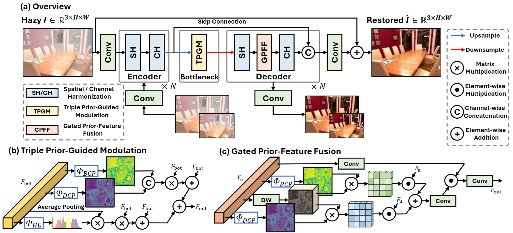
IEEE Transactions on Circuits and Systems for Video Technology, 2026
Paper
This paper proposes an efficient image dehazing network that embeds Dark Channel, Bright Channel, and Histogram Equalization priors as learnable operators rather than fixed shallow constraints. Through an asymmetric UNet with gated attention and dual bottlenecks, it hierarchically harmonizes physical priors with deep features, achieving state-of-the-art dehazing performance on 11 benchmarks with only 1.69M parameters and 17G FLOPs.
Slide
本报告围绕“视觉好看并不等于证据可信、模型可消费”这一问题，面向未来终端影像中的低光、模糊、云雾、低分辨率和跨模态差异等不完美观测，系统讨论低质视觉从图像恢复走向证据组织的技术路径。报告首先从盲逆问题出发，将退化由待消除的噪声转化为影响采样、优化和信息选择的核心状态；随后以亮度、阴影、频谱退化和光学-SAR差异为例，说明如何把退化现象转化为可读取的状态表征；最后进一步讨论语义中心扫描、光谱-空间动态降维和多源特征暂存/释放等特征治理机制，从而为端侧系统构建可消费、可调度、可推理的视觉证据。（Code: spdf1111）
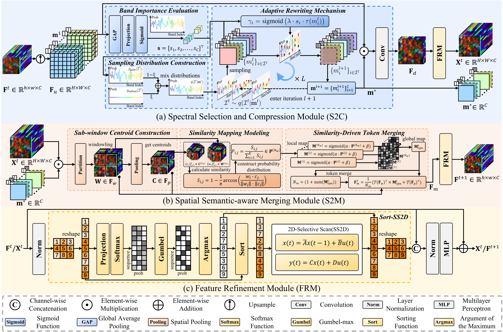
IEEE Transactions on Geoscience and Remote Sensing (TGRS), 2026
Paper / PDF / Code
This paper proposes S$^2$CD-Net, a spectrally-spatially coupled dynamic lightweight network for hyperspectral image super-resolution. To address the high-dimensional redundancy and heavy computational cost of existing methods, S$^2$CD-Net adopts a coupled reduction and independent learning paradigm: spectral selection and spatial compression collaboratively reduce cross-dimensional redundancy, while lightweight SS2D scanners perform efficient global modeling on compact spectral and spatial sequences. Experiments show that S$^2$CD-Net achieves competitive or superior reconstruction quality with significantly fewer parameters and lower computational complexity, offering an effective performance-efficiency trade-off for edge deployment.
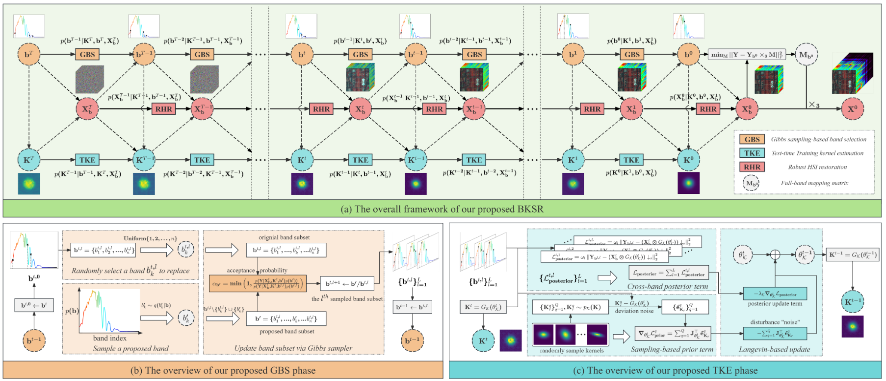
IEEE Transactions on Pattern Analysis and Machine Intelligence, 2026
Paper / PDF / Code
This paper proposes BKSR, an unsupervised blind hyperspectral image super-resolution framework built on a unified BKX-HMM model. By jointly optimizing band selection, kernel estimation, and image restoration through stochastic band exploration, test-time kernel learning, and robust restoration, it effectively addresses unknown degradations while alleviating the conventional complexity-performance trade-off.
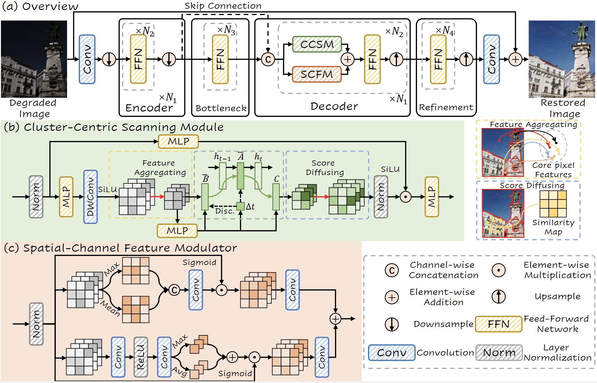
CVPR, 2026
PDF / Code
This paper introduces C²SSM, a novel visual state space model for ultra-high-definition (UHD) image restoration. Unlike existing methods that scan every pixel, C²SSM adopts a cluster-centric paradigm: it first aggregates pixels into semantic clusters, then performs global modeling only on the cluster centroids, and finally diffuses the context back to all pixels. This significantly reduces computational cost while preserving high-quality restoration. Experiments on five UHD tasks show state-of-the-art performance with much lower complexity.

IEEE Journal of Selected Topics in Applied Earth Observations and Remote Sensing, 2025
Paper / PDF
WST-DRFSL is a semi-supervised few-shot target recognition framework that employs a dynamic refinement strategy. This strategy alternately refines the classifier and the entire model, accelerating convergence while achieving high recognition accuracy across extensive datasets.
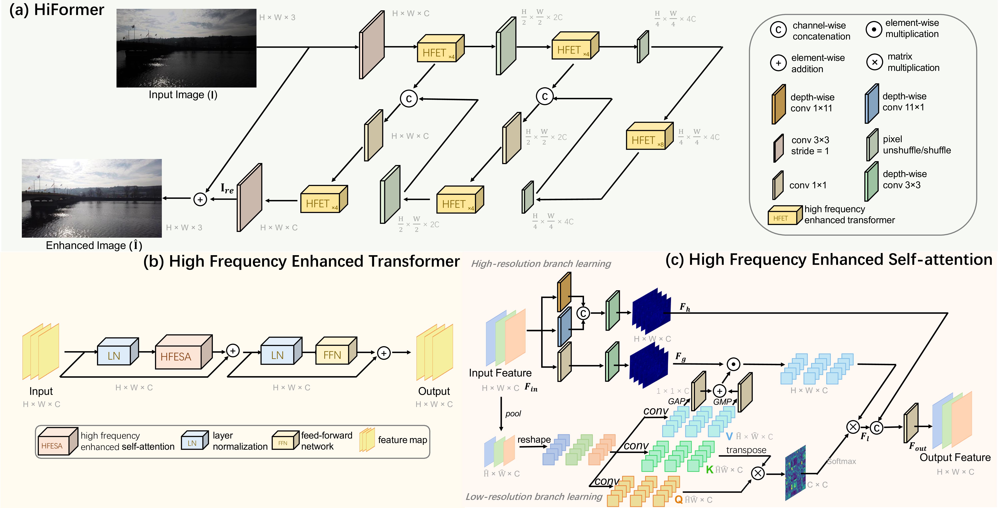
IEEE Transactions on Circuits and Systems for Video Technology, 2025
Paper / PDF
HiFormer is a dual-branch Transformer architecture designed for Ultra-High-Definition (UHD) image restoration. It combines a high-resolution branch that preserves fine details using directionally-sensitive large-kernel convolutions with a low-resolution branch that models global context via self-attention. This collaboration effectively compensates for high-frequency losses caused by downsampling and attention mechanisms, enabling efficient and high-fidelity restoration on consumer-grade GPUs.
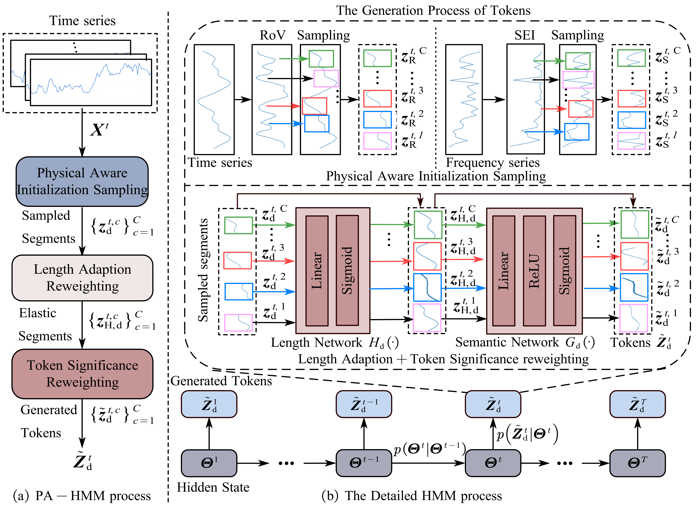
AAAI, 2026
Paper / PDF / Code
PATK reformulates time series tokenization as a physics-aware semantic segmentation process over dual-domain signal distributions, leveraging a hidden Markov modeling mechanism to dynamically adapt token boundaries and achieve robust, interpretable representation learning across diverse temporal domains.
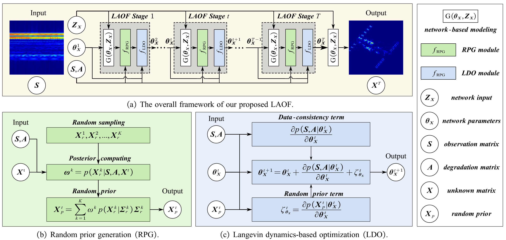
IEEE Transactions on Aerospace and Electronic Systems, 2025
Paper / PDF / Code
LAOF is a general unsupervised radar imaging framework. We have verified the SOTA performance of LAOF in sparse aperture ISAR imaging and auto-focusing problems under extremely low sparsity rates, extremely low signal-to-noise ratios, and in real-world data.
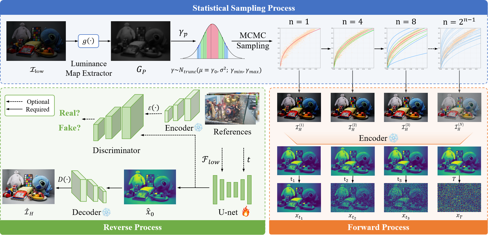
NeurIPS, 2025
Paper / PDF / Code
LASQ reformulates low-light image enhancement as a statistical sampling process over hierarchical luminance distributions, leveraging a diffusion-based forward process to autonomously model luminance transitions and achieve unsupervised, generalizable light restoration across diverse illumination conditions.
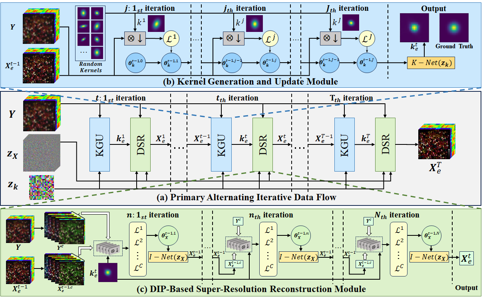
IEEE Geoscience and Remote Sensing Letters, 2025
Paper / PDF
SAKE performs unsupervised HSI super-resolution via adaptive blur kernel estimation, requiring no extra data and demonstrating superior generalization across scenarios.
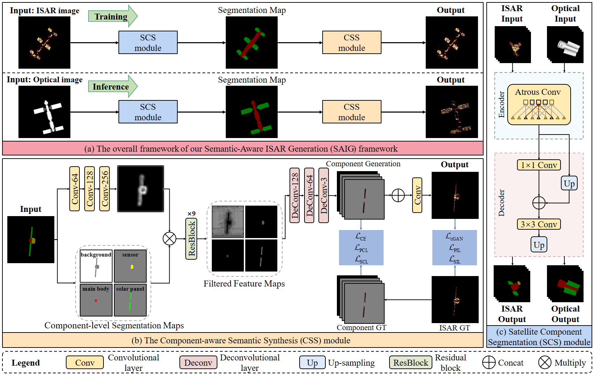
IEEE Geoscience and Remote Sensing Letters, 2025
Paper / PDF
SAIG introduces a semantic-aware generation framework using segmentation-based refinement to produce high-fidelity ISAR images from optical inputs.
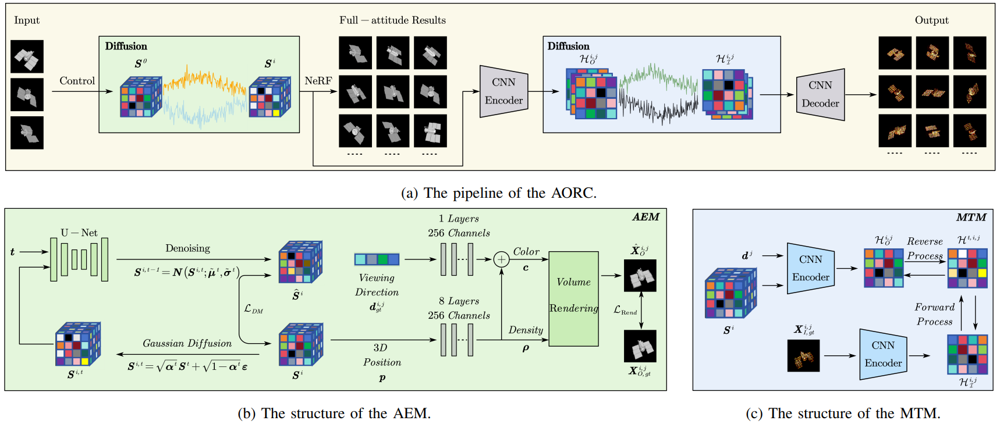
IEEE International Conference on Acoustics, Speech and Signal Processing, 2025
Paper / PDF
AORC learns attitude-aware latent representations and transforms them into high-fidelity ISAR images from optical inputs through a Brownian-Bridge-based diffusion process.
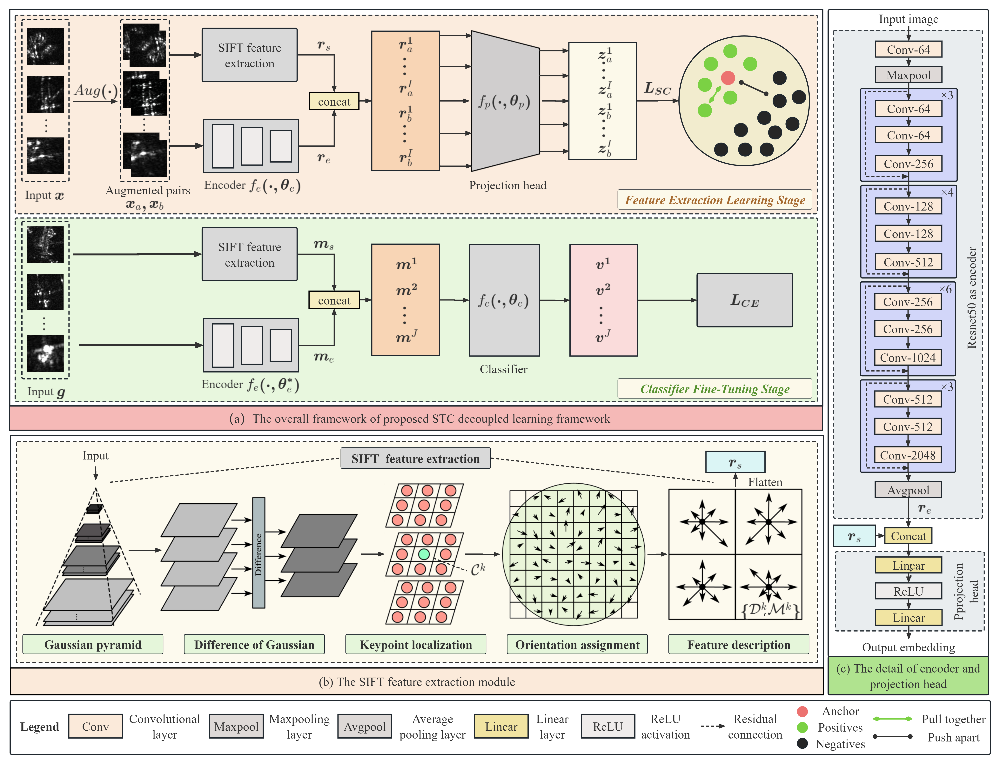
Neurocomputing, 2025
Paper / PDF / Code
STC leverages SIFT features and decoupled learning to tackle class imbalance in SAR target recognition, achieving strong generalization and SOTA performance.

CVPR, 2024
Paper / PDF / Code
The proposed DKP is a plug-and-play kernel estimation tool, which can be combined with the off-the-shelf image restoration model, e.g., DIP and Diffusion model, to realize unsupervised blind image super-resolution.
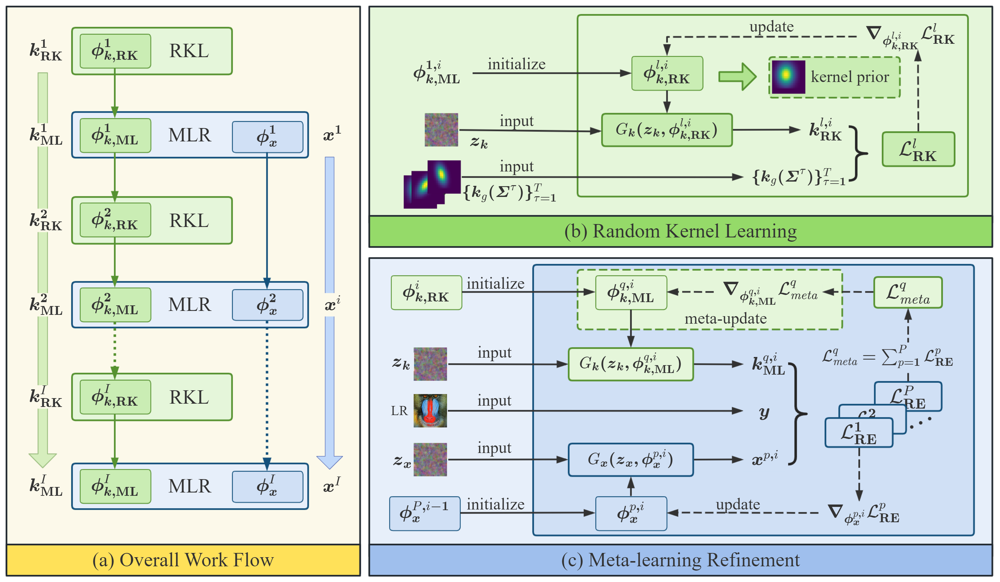
Zhixiong Yang, Jingyuan Xia*, Shengxi Li, Wende Liu, Shuaifeng Zhi, Shuanghui Zhang, Li Liu, Yaowen Fu, Deniz Gündüz
Neural Networks, 2024
Paper / PDF / Code
DDSR is an unsupervised blind SISR method, which can handle different degradations, such as partial occlusion, noise, and low-light conditions.
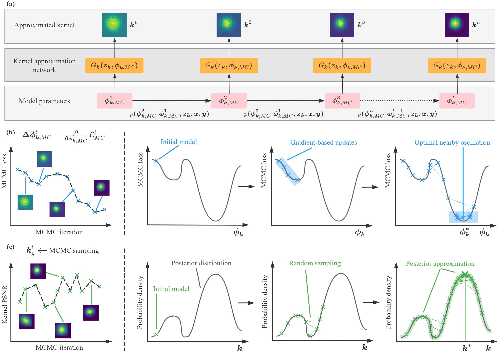
Jingyuan Xia, Zhixiong Yang*, Shengxi Li, Shuanghui Zhang*, Yaowen Fu, Deniz Gündüz, Xiang Li
IEEE Transactions on Pattern Analysis and Machine Intelligence, 2024
Paper / PDF / Code
This paper proposes a plug-and-play blind image super-resolution method based on the Meta-learning and Markov Chain Monte Carlo, which contributes to preventing bad local optimal solutions from the optimization perspective.
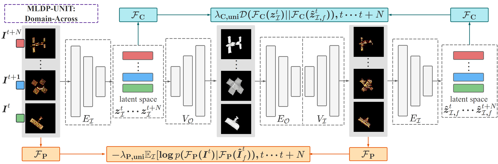
Huaizhang Liao, Jingyuan Xia*, Zhixiong Yang, Fulin Pan, Zhen Liu, Yongxiang Liu
IEEE Transactions on Circuits and Systems for Video Technology, 2023
Paper / PDF / Code
The proposed MLDP aims to realize the image translation from optical domain to ISAR domain. To generate realistic ISAR images, MLDP learns the scattering distribution features and the classification identifying features in physical and task perspectives. Meanwhile, MLDP applies the meta-learning strategy to improve its generalization ability to generate ISAR images under limited training samples.
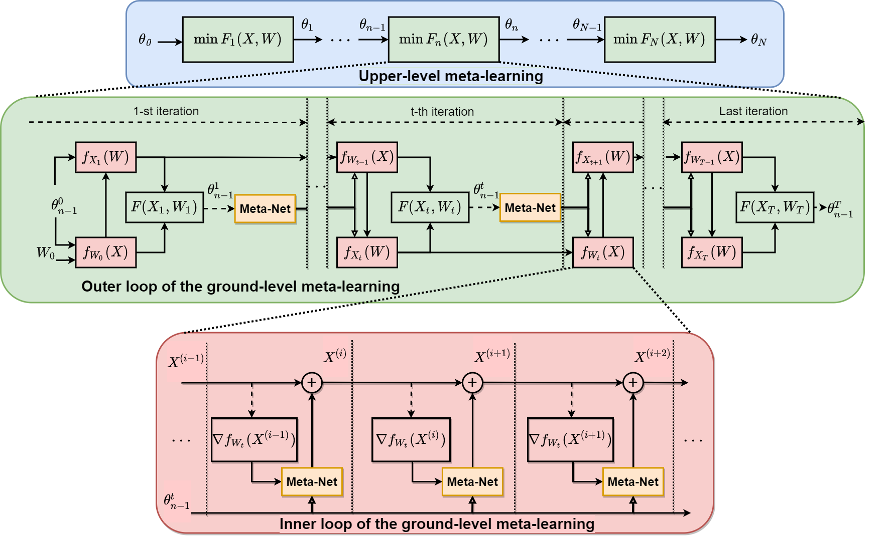
Jingyuan Xia, Shengxi Li, Jun-Jie Huang*, Zhixiong Yang, Imad M. Jaimoukha, Deniz Gündüz
IEEE Transactions on Neural Networks and Learning Systems, 2023
Paper / PDF / Code
This paper proposes a meta-learning-based alternating minimization (MLAM) method for nonconvex problems of multiple variables, which aims to minimize a part of the global losses over iterations instead of carrying minimization on each subproblem, and it tends to learn an adaptive strategy to replace the handcrafted counterpart resulting in advance on superior performance.
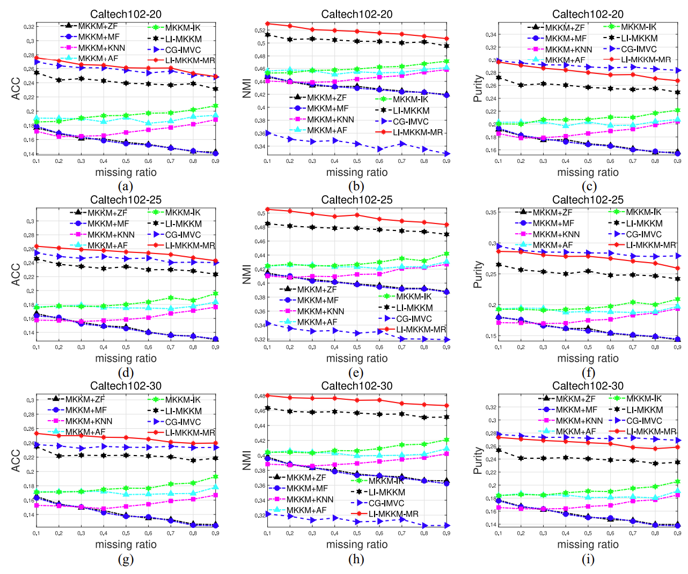
Miaomiao Li*, Jingyuan Xia, Huiying Xu, Qing Liao, Xinzhong Zhu*, Xinwang Liu
IEEE Transactions on Cybernetics, 2023
Paper / PDF
An improved Localized incomplete multiple kernel k-means (LI-MKKM), called LI-MKKM with matrix-induced regularization (LI-MKKM-MR), is proposed by incorporating a matrix-induced regularization term to handle the correlation among base kernels. We theoretically show that the local kernel alignment is a special case of its global one with normalizing each base kernel matrices.
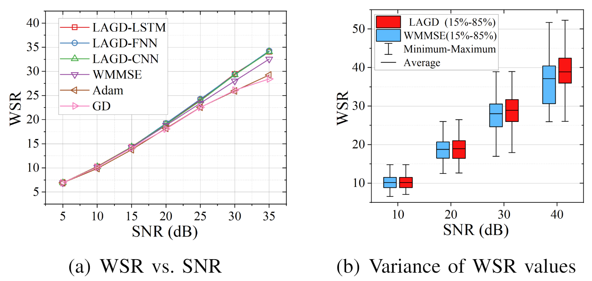
Zhixiong Yang, Jingyuan Xia*, Junshan Luo, Shuanghui Zhang*, Deniz Gündüz
IEEE Wireless Communications Letters, 2022
Paper / PDF / Code
This letter proposes a learning aided gradient descent (LAGD) algorithm to solve the weighted sum rate (WSR) maximization problem for multiple-input single-output (MISO) beamforming. The proposed LAGD algorithm directly optimizes the transmit precoder through implicit gradient descent based iterations, at each of which the optimization strategy is determined by a neural network, and thus, is dynamic and adaptive.